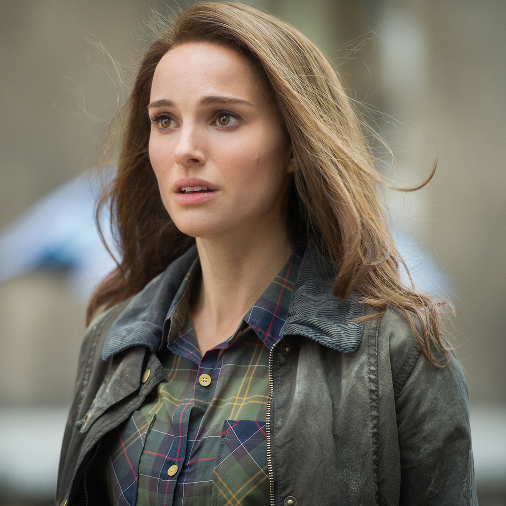

Película
Hace milenios, ocurrió un evento cósmico conocido como la Convergencia, abriendo portales entre los Nueve Mundos. Una siniestra raza llamada los Elfos Oscuros intenta usar la Convergencia como una forma de liberar al Éter, una fuerza de destrucción masiva con la capacidad de destruir todo el Universo. El líder de los Elfos Oscuros, Malekith, casi logra usar el Éter para causar la destrucción instantánea de los Nueve Mundos bajo la errónea creencia de que puede recrearlos a su propia imagen. No obstante, se le opone Bor, el entonces Rey de Asgard y el padre de Odín, quien usa el Bifrost para separar el Éter de las manos de Malekith justo Oscuros su arma más poderosa. Volviendo a su mundo natal, Svartalfheim, se hace evidente que los Elfos Oscuros no pueden vencer a los Asgardianos y que son prácticamente aniquilados en la batalla. Mientras los Asgardianos, incapaces de destruir el Éter, lo sellan en un lugar que jamás podrá ser encontrado, Malekith, Algrim y varios sobrevivientes logran escapar en animación suspendida, prometiendo regresar un día y terminar su plan.
Personajes principales
Thor
Chris Hemsworth
Protagonista. Es el Dios del Trueno.
Loki
Tom Hiddleston.
Hijo de Frigga y hermano de Thor.
